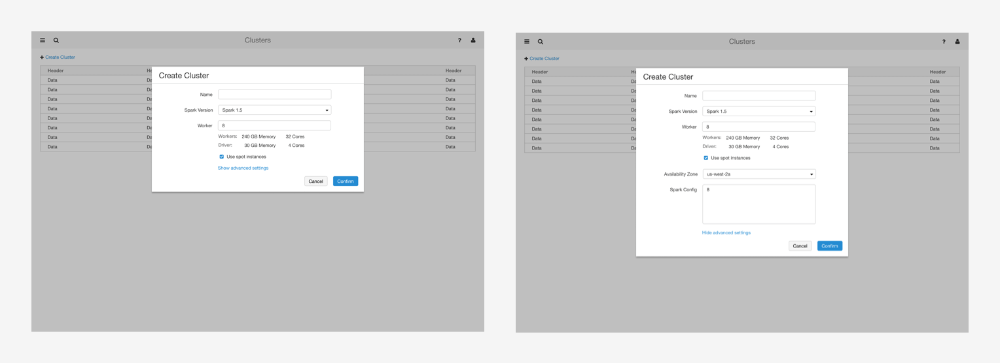
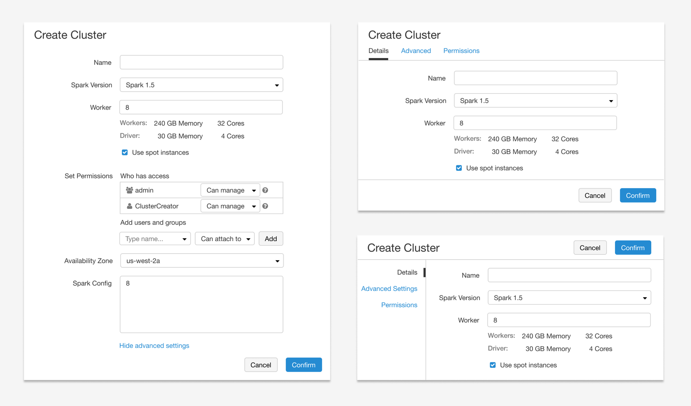

Simplify cluster management
WHAT'S CLUSTER?
When it comes to big data, both analytics and ETL(Extract, Transform, Load) workloads require computing resources (computers) to handle the huge amount of data. We call the group of computers a cluster, and our product allows users to provision clusters from the cloud.
THE CHALLENGE
How to make cluster management simple for data scientists?
Cluster management is very complex. Cloud providers like Amazon AWS and Microsoft Azure often use a wizard UI with pages of configurations for cluster creation. The difference for us is, our main user data scientists are not as sophisticated as dev ops. How to make cluster management simple for them?
MY ROLE
At Databricks we have a small two-person design team. I lead the design on cluster management and work closely with product managers and engineers to deliver value. Among the 20+ released features on cluster UI, I picked three to show case how we make cluster management simple incrementally.
CASE STUDY 1: Scale cluster creation
Simple things simple, complex things possible
At the time I joined, our cluster UI was very basic. It includes a list page and a few dialogs (for cluster creating and editing). My first design task was to add access control, so the user can control who has what permissions on their cluster.
The feature itself is very straightforward, but when adding permission settings on the cluster creation dialog, the dialog got too long and seems daunting to data scientists. So I explored a tab layout in the dialog and iterated based on hallway testings - most feedback favored the tab layout design as it looks cleaner.
One engineer asked,
üßê- why not move it to a full page design?
I was like,
ü§©- Why did not I think of that?¬†
So I moved the dialog to a full page design and sent together with a revised tab design for broader feedback. Feedback emails flooded in. 
- Some engineers liked full page since it offers more space and scalability. It also lets user aware of all the configurations. 
- Some concerned the information overload for new users on the full page - most of the time, new users do not know, or care about what access control is.
- Another suggestion came up: wizard design, which offers new users guidance and allows skipping steps. 
A PM, an engineer and I gathered and tried to fix the problem of "a single giant page with lots of settings". While talking about our principle of "simple things simple, and complex things possible", suddenly it clicked! Why not hide all the advanced in "show advanced" section; then use tab layout inside to group things.
We shared the design again and this time no objection. We also sent 4 options to external data scientists for testing. The aha moment solution won.
A bonus point is, we also reached a scalable design, which I appreciated every time I added new features to this cluster creation UI.
CASE STUDY 2: Persist cluster configuration
Less is more
Incrementally we added another 4 tabs and 10+ input fields on the cluster UI. It became impossible for users to fill in the form every time they create a cluster. Customers started to ask for cluster template feature - they want to create a cluster from a template.
Before jumping into the feature design. We asked why they want a cluster template? 
I want to reuse the cluster configurations I created before.
It is difficult for non-advanced users to create a cluster, they do not know what parameters to use and what's the right size. 
Instead of giving customers another list to manage cluster configurations (besides the existing running and terminated cluster list), we proposed starting and stopping a cluster - so the user can simply start a cluster to reuse its previous configuration; for the second use case, an admin can create a cluster for non-advanced users, and allow them to start it if needed. By doing this, there is only one cluster list, easy to manage.
Comparing to a list design which introduces extra cognitive load and more management effort in the long run, the new design is simple - add a pair of start-stop icons.
CASE STUDY 3: Clean up clutter
Clean, and simple
As cluster creation form got complex, the cluster list page also became cluttered and outdated. How to redesign it to improve its usability? I sat together with an engineer and a PM to brainstorm ideas.
- First, why do people come to this page? Admins are interested in running clusters, their size and type, to get a sense of the cost. While data scientists want to quickly find the cluster they care about, to start, configure, or debug. 
- Next, we looked all the feedback people have reported, and the usage data (what users do) to guide our design decisions. 
- Then we shared a proposed mockup to get broader feedback. Cluster list page is the second most visited page in the product. Everyone inside the company may have opinions on its redesign. 
- The moment feedback came in, I felt regret for asking. How to accommodate all the different requests while keeping the UI simple? 
- Thanks to the super collaborative team, we came up with a better solution that made everyone happy. And the cluster list UI got a fresh look. 
THE RESULT OF CASE STUDIES
The rewarding part is building a product that helps organizations and data scientists do their work better. Knowing customers getting value out of the features often makes my day.
features built on top of the cluster creation layout
Fast search, less clutter, awesome work!